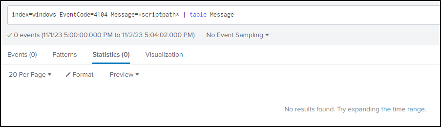
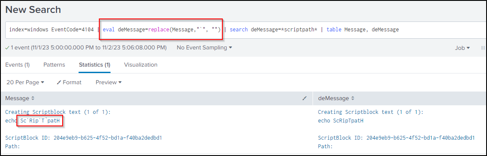

Powershell Obfuscation 1: Formatter
PowerShell Obfuscation 1: Formatters
Backtick (`)
In PowerShell, backtick (`) is used as an escape character (like \ in many other languages). For example:
Sc`Rip`t`path==ScRiptpath
Imagine your detection systems like SIEM will not deobfuscate PowerShell command by default, and assume you are detecting the keyword Scriptpath:
index=windows EventCode=4104 Message=*scriptpath*

To avoid the false negative, one of the possible solutions is to remove all backticks. For example on Splunk:
index=windows EventCode=4104 | eval deMessage=replace(Message,"`", "") | search deMessage=*scriptpath* | table Message, deMessage

Formatter with {}
In PowerShell, you can use {} with -f to format a string. This is similar to the following in Python:
The PowerShell equivalent will be:
For example:
"{3}{0}{4}{7}{9}{5}{2}{8}{1}{6}" -f'.','resS','.c','SysTEm.io','CoMp','On','ioNMoDE','RE','omp','SSI'
# Deobfuscated
SysTEm.io . CoMp RE SSI On .c omp resS ioNMoDE
SysTEm.io.CoMpRESSIOn.compresSioNMoDE
Real-world example
The following case study references the DFIR Report: NetSupport Intrusion Results in Domain Compromise.
Here is a PowerShell code snippet used by the threat actor to defense evasion - do not run when encountering AV / Sandbox:
${4`6q0o} =[tYPE]("{3}{0}{4}{7}{9}{5}{2}{8}{1}{6}" -f'.','resS','.c','SysTEm.io','CoMp','On','ioNMoDE','RE','omp','SSI') ;SeT-iTem ('vaR'+'I'+'Ab'+'lE:v25yj') ([Type]("{0}{2}{4}{3}{1}" -f 's','oNVeRt','yste','.C','M') ) ; ${b`m`W1y}=[type]("{2}{1}{3}{0}" -f'FIle','tE','Sys','M.IO.') ; ${s`cr`IptpA`TH} = &("{0}{2}{1}"-f 'spl','th','it-pa') -parent ${m`yI`NVoCatiOn}."MYCo`Mm`A`ND"."d`Ef`InItioN"
if (${Sc`Rip`T`patH} -match ("{0}{1}"-f'a','vast')) {exit}
if (${s`Cr`ipTPatH} -match "avg") {exit}
if (${Scr`iP`TpATH} -match ("{0}{1}" -f 'sam','ple')) {exit}
if (${SCRi`p`TpatH} -match ("{0}{1}"-f'analy','sis')) {exit}
if (${scri`pt`p`ATh} -match ("{0}{1}{2}"-f'm','alwa','re')) {exit}
if (${S`cRipt`paTh} -match ("{1}{0}" -f'dbox','san')) {exit}
if (${sc`RiPTpA`TH} -match ("{1}{0}" -f'irus','v')) {exit}
[tYPE]("{3}{0}{4}{7}{9}{5}{2}{8}{1}{6}" -f'.','resS','.c','SysTEm.io','CoMp','On','ioNMoDE','RE','omp','SSI');[type](System.io.Compression.CompressionMode);
SeT-iTem ('vaR'+'I'+'Ab'+'lE:v25yj') ([Type]("{0}{2}{4}{3}{1}" -f 's','oNVeRt','yste','.C','M') ) ;Set-Item variable:v25yj ([Type]System.Convert);$v25yj = ([Type]System.Convert);
${bmW1y}=[type]("{2}{1}{3}{0}" -f'FIle','tE','Sys','M.IO.') ;$bmW1y = [type](System.IO.File)
${s`cr`IptpA`TH} = &("{0}{2}{1}"-f 'spl','th','it-pa') -parent ${m`yI`NVoCatiOn}."MYCo`Mm`A`ND"."d`Ef`InItioN"$scriptpath = &(split-path) -parent MyInvocation.MyCommand.Definition
Deobfuscated:
$46q0o = [type](System.io.Compression.CompressionMode);
Set-Item variable:v25yj ([Type]System.Convert);
$bmW1y = [type](System.IO.File);
# The current script's folder path
$scriptpath = Split-path -parent MyInvocation.MyCommand.Definition
if ($scriptpath -match "avast") {exit}
if ($scriptpath -match "avg") {exit}
if ($scriptpath -match "sample") {exit}
if ($scriptpath -match "analysis") {exit}
if ($scriptpath -match "malware") {exit}
if ($scriptpath -match "sandbox") {exit}
if ($scriptpath -match "virus") {exit}
- The first 3 variable will be variables to be used in latter expressions to evade pattern-based detections
- For example, if you are detecting the pattern
System.IO.File, it simply replaces it by$bmW1yin this case
- For example, if you are detecting the pattern
- The
ifstatements are trivial - exit the program if seeing the current path matching the patterns related to some AV engines, sandbox, etc.